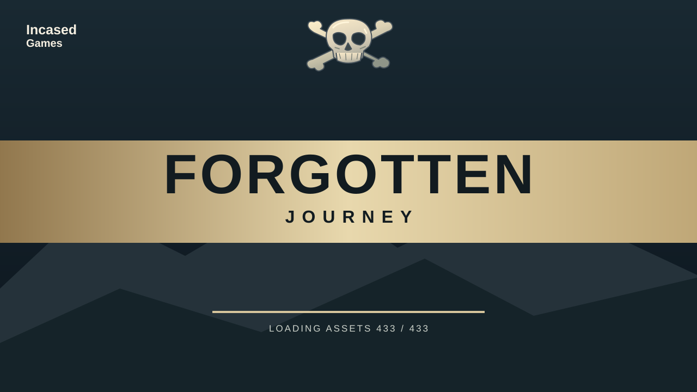

An Incased Games adventure
Forgotten Journey
Seven lands. A forgotten warrior.
Fight your way from the meadow to the Gods Palace.
Click to begin · Keyboard and mouse
From the players
How was your journey?
Leave an honest rating and tell us what stood out.
Help us improve
Found a glitch?
No account needed. Reports go to our private bug inbox, separate from public reviews.
Behind the adventure
Explore the game’s assets

Forgotten Journey collection
Listen to and download the game’s music and sound effects. This is also where the 3D model collection will live.
Open the collection →Made with a little help
Credits & acknowledgements
Every third-party music and sound contributor used in this release is credited below, with links to the original work and its licence.
Game direction: Incased Games. Game code, procedural environments and original synthesized effects developed with Codex. Character base models: Kay Lousberg / KayKit (CC0). Additional golem, staff and armor models supplied by the creator; 3D downloads will be added here later. 3D rendering: Three.js Authors · MIT licence.